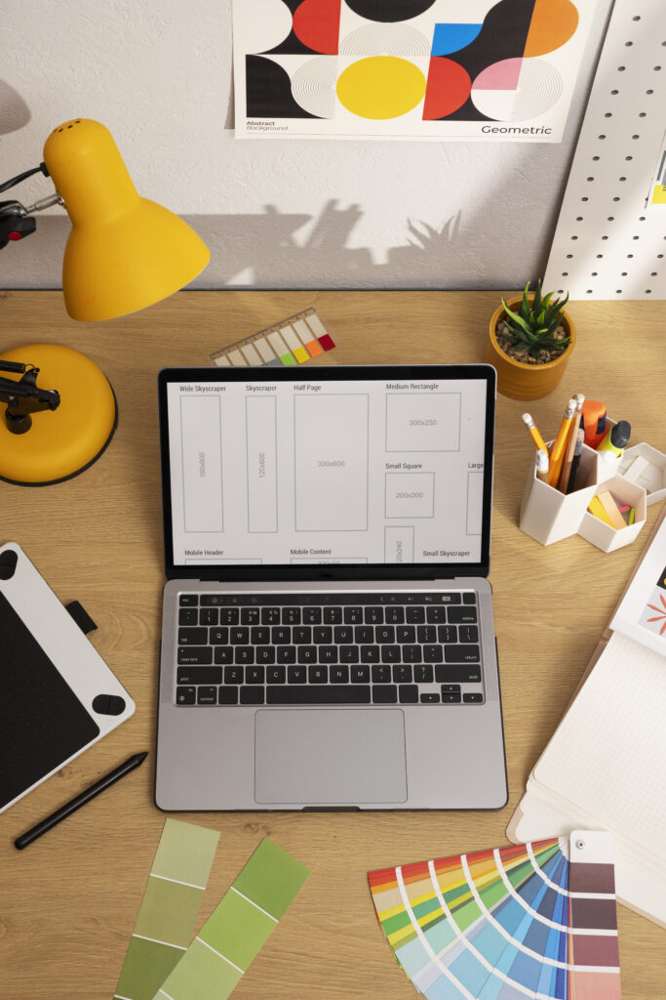

Diseño Gráfico
Desarrollo Web
Animación 3D

Producción Audiovisual
Diseño Gráfico
Desarrollo Web
Animación 3D
Producción Audiovisual
En nuestra agencia de diseño multimedial, creemos en la fusión perfecta entre creatividad y tecnología para desarrollar soluciones únicas y efectivas. Nos especializamos en brindar servicios de diseño gráfico, desarrollo web, animación 3D y producción audiovisual, cubriendo así todas las necesidades visuales y digitales de nuestros clientes.
El diseño gráfico es el corazón de todo proyecto. Creamos identidades visuales sólidas que reflejan la esencia de cada marca y conectan de manera auténtica con su público objetivo. Cada diseño es una solución a medida, adaptada a las necesidades y características de tu empresa.
En cuanto al desarrollo web, diseñamos experiencias digitales que no solo son visualmente atractivas, sino también intuitivas y funcionales. Nos aseguramos de que cada sitio web que construimos ofrezca una navegación fluida y cumpla con los estándares más altos de rendimiento.
La animación 3D nos permite contar historias de una manera que otras herramientas no pueden. Damos vida a conceptos complejos, desde el diseño de personajes hasta entornos detallados, creando un impacto visual que no pasa desapercibido.
Nuestros servicios de producción audiovisual están enfocados en generar contenido que transmita el mensaje adecuado. Trabajamos en todas las etapas de la producción para asegurar un resultado final que cumpla con los más altos estándares de calidad.
Entendemos que cada proyecto es único, por eso nuestro enfoque se basa en una profunda comprensión de las necesidades de nuestros clientes. Desde la conceptualización hasta la entrega final, nuestro equipo se asegura de que cada detalle esté alineado con los objetivos del proyecto.
Si buscas una agencia que combine visión, estrategia y ejecución, estamos aquí para transformar tus ideas en proyectos exitosos que marquen la diferencia.